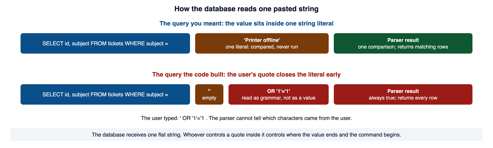
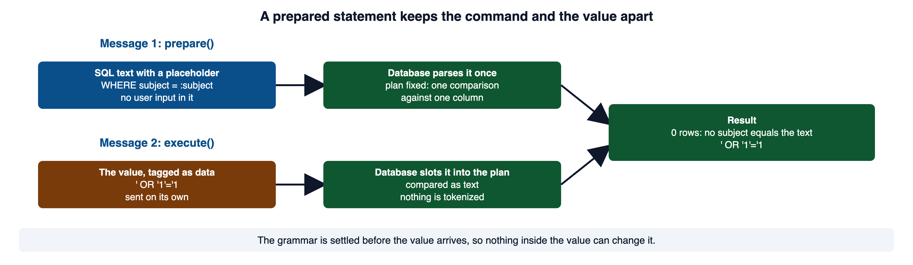
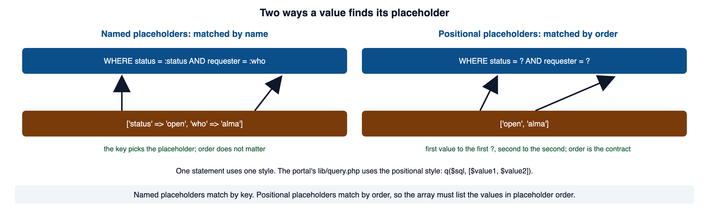
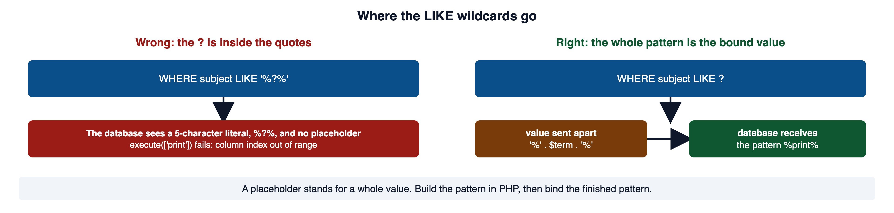
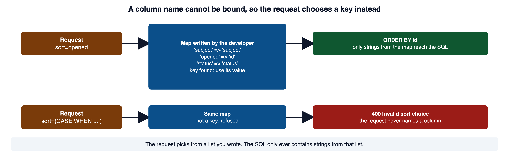
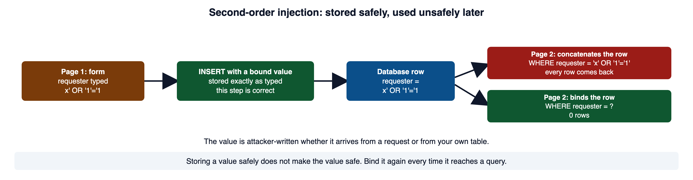
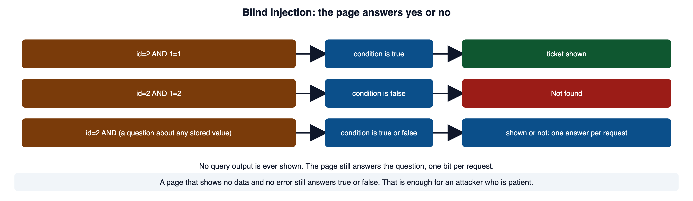

An equipment lookup accepts a name. The same characters that belong to an ordinary name can also change a query when the program concatenates them into SQL. This module follows the boundary between data and instructions, then compares the controls needed for SQL, shell commands, and file paths.
Read this page with your course environment open, so you can save each example as a small PHP file and run it. Red code blocks show a shape to recognize and never ship. Green code blocks show the pattern to copy.
1Required reading
These three are required reading for the module. This page teaches everything the assignment and the quiz need; the readings give the same material in the industry's own words, which is what a scanner finding, a CVE advisory, or a bug report will use.
- OWASP Top 10:2025 A05 Injection. The risk category, the 37 weaknesses mapped to it, and a short prevention list. Its preferred option is a safe API with a parameterized interface, which is section 5 of this lecture.
- OWASP SQL Injection Prevention Cheat Sheet. The operative reference for this module. It ranks the defenses, puts prepared statements first, and labels escaping "strongly discouraged."
- CLARK: Secure Coding Guidelines, Todd McDonald, University of South Alabama. Slides and hands-on exercises on the coding rules this module applies to database code. A free CLARK account is needed.
2One weakness at many sinks
Module 01 section 5 gave you the definition: injection is untrusted data reaching an interpreter that reads part of it as a command. Module 03 put two controls on that path, validation on the way in and encoding at the sink. This module is about the sink that reads SQL, and about the one control that settles the question for it.
PHP hands strings to interpreters all the time. Each one is a sink, and each has its own name for the failure.
| Sink in your code | What interprets the string | Failure name |
|---|---|---|
$pdo->query(...), $pdo->exec(...) | the database's SQL parser | SQL injection (CWE-89) |
shell_exec, exec, system, passthru | the operating-system shell | OS command injection (CWE-78) |
include, require, fopen, file_get_contents | the PHP file loader and the filesystem | path traversal (CWE-22) |
echo or print into a page | the browser's HTML parser | cross-site scripting (CWE-79), out of scope for this module |
| an LDAP filter, an XPath query, a template | that library's own parser | LDAP, XPath, template injection |
Learn the shape at one sink and the others are a change of interpreter, not a change of idea. Most of this lecture works in SQL. Section 10 shows the same shape at the shell and the filesystem.
OWASP Injection Prevention Cheat Sheet defines injection the same way, "when an application sends untrusted data to an interpreter," and lists the same family of interpreters.
3How a database reads a query
A database does not receive a query as a list of values with a shape around them. It receives one flat string of characters and runs it through a parser, the way a compiler reads source code. The parser walks the string from left to right, splits it into tokens, and builds a plan that says what to do.
The examples on this page run against a small help-desk database that lives in memory. Save this file as setup.php next to the examples. Every example starts by loading it.
<?php
// setup.php: the small database every example on this page starts from.
$pdo = new PDO('sqlite::memory:');
$pdo->setAttribute(PDO::ATTR_ERRMODE, PDO::ERRMODE_EXCEPTION);
$pdo->setAttribute(PDO::ATTR_DEFAULT_FETCH_MODE, PDO::FETCH_ASSOC);
$pdo->exec("CREATE TABLE tickets (
id INTEGER PRIMARY KEY,
subject TEXT NOT NULL,
status TEXT NOT NULL,
requester TEXT NOT NULL
)");
$pdo->exec("INSERT INTO tickets (subject, status, requester) VALUES
('Printer offline', 'open', 'alma'),
('Password reset', 'closed', 'dermot'),
('VPN drops daily', 'open', 'yusuf'),
('Invoice copy', 'closed', 'priya')");
$pdo->exec("CREATE TABLE staff (id INTEGER PRIMARY KEY, username TEXT NOT NULL, door_pin TEXT NOT NULL)");
$pdo->exec("INSERT INTO staff (username, door_pin) VALUES ('rmarsh', '4471'), ('lchen', '9025')");
// Print rows one per line, so every example shows what came back.
function show(array $rows): void
{
echo count($rows), " row(s)\n";
foreach ($rows as $row) {
echo ' ', implode(' | ', $row), "\n";
}
}Take the query you meant to run.
SELECT id, subject FROM tickets WHERE subject = 'Printer offline'The parser reads that as a keyword, some identifiers, another keyword, an operator, and then one string literal, 'Printer offline'. The literal has a beginning quote and an ending quote, and everything between them is inert. Printer offline is never executed. It is compared.
Now suppose the value came from $_GET['subject'] and the user typed ' OR '1'='1. Your code pastes it in, and the string that reaches the parser is this.
SELECT id, subject FROM tickets WHERE subject = '' OR '1'='1'The parser is not confused or tricked. It does its job on the string it was handed, and that string asked for every row. The figure shows the two readings side by side: the same column, the same operator, and a literal that ends where the user decided.

Here is the code that built that string, and the real result.
<?php
// WHY: Concatenating the submitted predicate lets input change the SQL condition instead of remaining a data value.
require 'setup.php';
$subject = "' OR '1'='1"; // what arrived in $_GET['subject']
$sql = "SELECT id, subject, status, requester FROM tickets WHERE subject = '" . $subject . "'";
echo $sql, "\n";
show($pdo->query($sql)->fetchAll());Vulnerable. Why: Concatenating the submitted predicate lets input change the SQL condition instead of remaining a data value.
SELECT id, subject, status, requester FROM tickets WHERE subject = '' OR '1'='1'
4 row(s)
1 | Printer offline | open | alma
2 | Password reset | closed | dermot
3 | VPN drops daily | open | yusuf
4 | Invoice copy | closed | priyaOnce the attacker is writing grammar instead of values, the rest follows from SQL itself. A UNION staples a second query's rows onto yours, and -- starts a comment so the closing quote your code added is ignored. Here the second query reads a table the search was never meant to touch.
<?php
// WHY: A concatenated query lets supplied UNION syntax change which rows and columns the response returns.
require 'setup.php';
$subject = "' UNION SELECT id, username, door_pin, 'staff' FROM staff --";
$sql = "SELECT id, subject, status, requester FROM tickets WHERE subject = '" . $subject . "'";
echo $sql, "\n";
show($pdo->query($sql)->fetchAll());Vulnerable. Why: A concatenated query lets supplied UNION syntax change which rows and columns the response returns.
SELECT id, subject, status, requester FROM tickets WHERE subject = '' UNION SELECT id, username, door_pin, 'staff' FROM staff --'
2 row(s)
1 | rmarsh | 4471 | staff
2 | lchen | 9025 | staffA third shape, '; DROP TABLE tickets; --, ends the statement and starts another. It works on drivers that run more than one statement per call. Read every payload as grammar. Each one is punctuation that arrived in a role your code did not expect.
PHP Manual: SQL Injection describes the same mechanism: the flaw appears "when developers concatenate or interpolate arbitrary input in their SQL statements." The OWASP SQL Injection Prevention Cheat Sheet in section 1 is the second source.
4The vulnerable shape, and why escaping does not fix it
The shape to recognize is a query string built by concatenation, with a request value inside it. Name the parts, because this is the analysis you repeat in every incident report.
- The source is the request value, which crossed the browser-to-server trust boundary.
- The sink is
$pdo->query(), which hands a string to the SQL parser. - The flow is the concatenation, and it is unguarded.
- The asset is every row the database account can reach.
The concatenation is the whole defect. Nothing else in the file has to be wrong.
The tempting repair is to hunt down dangerous characters before they reach the string. Resist it. Escaping is a deny-list, the pattern Module 03 section 4 taught you to distrust. It also fails outright when the value lands outside quotes.
<?php
// WHY: An unchecked expression in a numeric query position can alter the WHERE condition.
require 'setup.php';
$id = '2 OR 1=1'; // what arrived in $_GET['id']; no quote anywhere in it
$sql = "SELECT id, subject, status, requester FROM tickets WHERE id = " . addslashes($id);
echo $sql, "\n";
show($pdo->query($sql)->fetchAll());Vulnerable. Why: An unchecked expression in a numeric query position can alter the WHERE condition.
SELECT id, subject, status, requester FROM tickets WHERE id = 2 OR 1=1
4 row(s)
1 | Printer offline | open | alma
2 | Password reset | closed | dermot
3 | VPN drops daily | open | yusuf
4 | Invoice copy | closed | priyaaddslashes found nothing to escape. There was no quote to break out of, so the payload needed none.
Parameterization removes the entire question. The next section is that fix.
PHP Manual: addslashes carries the warning quoted above. PHP Manual: mysqli_real_escape_string states the character-set requirement and says, "Use prepared statements instead."
5Prepared statements
A prepared statement splits the single string into two separate messages: the command, sent once, and the values, sent apart from it.
<?php
// WHY: Placeholders keep bound values separate from the SQL statement structure.
require 'setup.php';
$subject = "' OR '1'='1"; // the same hostile value as before
$statement = $pdo->prepare(
'SELECT id, subject, status, requester FROM tickets WHERE subject = :subject'
);
$statement->execute(['subject' => $subject]);
show($statement->fetchAll());
$statement->execute(['subject' => 'VPN drops daily']);
show($statement->fetchAll());Secure. Why: Placeholders keep bound values separate from the SQL statement structure.
0 row(s)
1 row(s)
3 | VPN drops daily | open | yusufThe hostile value matched nothing, because it was compared as text against each subject. The real subject still matched. No character was removed from either.
Here is what happens underneath, in order. The figure follows the same steps.

That fourth step is the entire defense. The grammar was settled before the value existed, so nothing in the value can change it.
This is what the OWASP cheat sheet means when it says the database "will always distinguish between code and data, regardless of what user input is supplied."
PHP Manual: Prepared statements and stored procedures says the parameters "don't need to be quoted; the driver automatically handles this," and shows both placeholder styles. W3Schools: PHP MySQL Prepared Statements has the same pattern with a live editor.
6Positional placeholders and the portal's helpers
PDO offers two placeholder styles. A named placeholder is a colon and a name, such as :subject, and the values array uses the names as keys. A positional placeholder is a bare ?, and the values array lists the values in the order the placeholders appear. The first ? takes the first value, the second takes the second.
<?php
// WHY: Placeholders keep bound values separate from the SQL statement structure.
require 'setup.php';
$status = 'open';
$who = 'alma';
$statement = $pdo->prepare(
'SELECT id, subject FROM tickets WHERE status = ? AND requester = ?'
);
$statement->execute([$status, $who]); // first ? gets 'open', second ? gets 'alma'
show($statement->fetchAll());
$statement->execute([$who, $status]); // swapped: status = 'alma', requester = 'open'
show($statement->fetchAll());Secure. Why: Placeholders keep bound values separate from the SQL statement structure.
1 row(s)
1 | Printer offline
0 row(s)The second call is still safe. It is also wrong, because the order is the contract. With positional placeholders, read the SQL and the array together and check that they line up.

Your portal uses the positional style. lib/query.php wraps the three lines of section 5 in three helpers, so a page never builds a query string from a request value. The functions are shown here as the file defines them, with a small db() so the example runs on its own.
<?php
// WHY: Placeholders keep bound values separate from the SQL statement structure.
require 'setup.php';
// The three helpers, as lib/query.php defines them. db() returns the PDO.
function db(): PDO { global $pdo; return $pdo; }
function q(string $sql, array $params = []): PDOStatement
{
$stmt = db()->prepare($sql);
$stmt->execute($params);
return $stmt;
}
function q_one(string $sql, array $params = []): ?array
{
$row = q($sql, $params)->fetch();
return $row === false ? null : $row;
}
function q_all(string $sql, array $params = []): array
{
return q($sql, $params)->fetchAll();
}
$rows = q_all('SELECT id, subject FROM tickets WHERE status = ? AND requester = ?', ['open', 'yusuf']);
show($rows);
$row = q_one('SELECT subject FROM tickets WHERE id = ?', ["2 OR 1=1"]);
var_dump($row);Secure. Why: Placeholders keep bound values separate from the SQL statement structure.
1 row(s)
3 | VPN drops daily
NULLThe header of lib/query.php states the precondition: the SQL uses ? placeholders for every request-derived value, and the values travel in the array, in placeholder order. q returns the executed statement, q_one returns the first row or null, and q_all returns every row. The payload 2 OR 1=1 through q_one found no ticket, because it was compared as a value against the id column.
There is one way to write code that looks parameterized and is not.
<?php
// WHY: A prepared query controls SQL syntax but does not enforce ownership when the required owner condition is absent.
require 'setup.php';
$status = 'open';
$who = "x' OR '1'='1"; // what arrived in $_GET['who']
$statement = $pdo->prepare(
"SELECT id, subject, requester FROM tickets WHERE status = ? AND requester = '$who'"
);
$statement->execute([$status]);
show($statement->fetchAll());Vulnerable. Why: A prepared query controls SQL syntax but does not enforce ownership when the required owner condition is absent.
4 row(s)
1 | Printer offline | alma
2 | Password reset | dermot
3 | VPN drops daily | yusuf
4 | Invoice copy | priyaPHP Manual: PDOStatement::execute documents the values array for both styles. OWASP Query Parameterization Cheat Sheet shows the PDO form beside other languages and insists the parameterization be done server-side.
7LIKE: the wildcards belong in the value
A search box usually means "contains," and in SQL that is LIKE with a pattern. In a LIKE pattern, % matches any run of characters and _ matches one character. The first attempt most people write puts the placeholder inside the pattern.
<?php
// WHY: A prepared query controls SQL syntax but does not enforce ownership when the required owner condition is absent.
require 'setup.php';
$term = 'print';
$statement = $pdo->prepare("SELECT id, subject FROM tickets WHERE subject LIKE '%?%'");
$statement->execute([$term]);
show($statement->fetchAll());Vulnerable. Why: A prepared query controls SQL syntax but does not enforce ownership when the required owner condition is absent.
PDOException: SQLSTATE[HY000]: General error: 25 column index out of rangeThe ? sits inside quotes, so the database read it as one character of a five-character literal. There was no placeholder, and the value had nowhere to go. A placeholder stands for a whole value, never for part of one.

Build the whole pattern in PHP and bind the finished pattern.
<?php
// WHY: Placeholders keep bound values separate from the SQL statement structure.
require 'setup.php';
$term = 'print'; // what arrived in $_GET['term']
$statement = $pdo->prepare('SELECT id, subject FROM tickets WHERE subject LIKE ?');
$statement->execute(['%' . $term . '%']); // the wildcards live in the value
show($statement->fetchAll());
$statement->execute(["%' OR '1'='1%"]); // the hostile value, through the same path
show($statement->fetchAll());Secure. Why: Placeholders keep bound values separate from the SQL statement structure.
1 row(s)
1 | Printer offline
0 row(s)The hostile value became a pattern to match, quotes and all, and no subject contains it.
<?php
// WHY: Placeholders keep bound values separate from the SQL statement structure.
require 'setup.php';
$term = '%'; // a user typed a bare percent sign
$statement = $pdo->prepare('SELECT id, subject FROM tickets WHERE subject LIKE ?');
$statement->execute(['%' . $term . '%']);
show($statement->fetchAll());
// Treat % and _ typed by the user as ordinary characters.
$literal = str_replace(['\\', '%', '_'], ['\\\\', '\%', '\_'], $term);
$statement = $pdo->prepare("SELECT id, subject FROM tickets WHERE subject LIKE ? ESCAPE '\\'");
$statement->execute(['%' . $literal . '%']);
show($statement->fetchAll());Secure. Why: Placeholders keep bound values separate from the SQL statement structure.
4 row(s)
1 | Printer offline
2 | Password reset
3 | VPN drops daily
4 | Invoice copy
0 row(s)The PHP Manual page linked in section 5 shows this exact pair as its Example 6: LIKE '%?%' marked invalid, LIKE ? with the wildcards added to the bound value marked correct.
SQLite: expression syntax, the LIKE operator defines %, _, and the ESCAPE clause for the database the portal runs on. W3Schools: SQL LIKE Operator is the general reference, with runnable examples.
8Values you can bind, identifiers you cannot
A placeholder stands for a complete data value: the thing a WHERE compares against, the thing an INSERT stores. It cannot stand for a table name, a column name, a keyword, or a direction such as ASC. The plan is built around fixed identifiers, so a placeholder cannot be one.
This matters the moment a feature lets the user choose a sort column.
<?php
// WHY: Accepting a raw sort expression lets the requester contribute SQL syntax in an identifier position.
require 'setup.php';
$sort = '(SELECT count(*) FROM staff)'; // what arrived in $_GET['sort']
$sql = "SELECT id, subject FROM tickets ORDER BY $sort";
echo $sql, "\n";
show($pdo->query($sql)->fetchAll());Vulnerable. Why: Accepting a raw sort expression lets the requester contribute SQL syntax in an identifier position.
SELECT id, subject FROM tickets ORDER BY (SELECT count(*) FROM staff)
4 row(s)
1 | Printer offline
2 | Password reset
3 | VPN drops daily
4 | Invoice copyNo quote was needed and no error was raised. The request did not name a column. It wrote a subquery against a table the ticket list never touches, and the database ran it. Whatever the request puts in that slot is SQL.
You cannot bind $sort. What you can do is refuse to let the request supply the identifier at all, and instead let it choose from a set of identifiers you wrote.
<?php
// WHY: A type check prevents array-shaped input from reaching operations that expect text.
require 'setup.php';
$requestedSort = 'opened'; // what arrived in $_GET['sort']
// The keys are the public vocabulary. The values are SQL you wrote.
$allowedSorts = [
'subject' => 'subject',
'opened' => 'id',
'status' => 'status',
];
if (!is_string($requestedSort) || !isset($allowedSorts[$requestedSort])) {
http_response_code(400);
exit('Invalid sort choice');
}
$sortColumn = $allowedSorts[$requestedSort];
$rows = $pdo->query("SELECT id, subject FROM tickets ORDER BY $sortColumn")->fetchAll();
show($rows);Secure. Why: A type check prevents array-shaped input from reaching operations that expect text.
4 row(s)
1 | Printer offline
2 | Password reset
3 | VPN drops daily
4 | Invoice copyThe request selects a key, and the application supplies the column. Whatever arrives in sort, the only strings that can reach the query are subject, id, and status, because those are the only values in the array. This is the allow-list from Module 03 section 4, applied to a piece of SQL.

The same rule covers more than sort columns. A direction (ASC or DESC), a table name, and the column list in a report builder are all identifiers or keywords. Each one needs a fixed set in code, chosen by key. A page size is different: it is a number, so validate it as one and bind it.
<?php
// WHY: Placeholders keep bound values separate from the SQL statement structure.
require 'setup.php';
$pageSize = filter_var('2', FILTER_VALIDATE_INT, ['options' => ['min_range' => 1, 'max_range' => 50]]);
if ($pageSize === false) {
http_response_code(400);
exit('Invalid page size');
}
$statement = $pdo->prepare('SELECT id, subject FROM tickets ORDER BY id LIMIT ?');
$statement->execute([$pageSize]);
show($statement->fetchAll());Secure. Why: Placeholders keep bound values separate from the SQL statement structure.
2 row(s)
1 | Printer offline
2 | Password resetPHP Manual: PDO::prepare states the rule: "Parameter markers can represent a complete data literal only. Neither part of a literal, nor keyword, nor identifier, nor whatever arbitrary query part can be bound." PHP Manual: Validate filters documents FILTER_VALIDATE_INT with min_range and max_range, used for the page size.
9The connection settings that keep binding real
Binding is only real when the driver sends the value apart from the SQL. Two connection settings decide that, and one of them depends on which database you talk to.
<?php
// WHY: Explicit PDO settings keep database failures visible to the controlled handler and make driver behavior deliberate.
$pdo = new PDO(
'mysql:host=db;dbname=app;charset=utf8mb4',
$user,
$password,
[
PDO::ATTR_EMULATE_PREPARES => false,
PDO::ATTR_ERRMODE => PDO::ERRMODE_EXCEPTION,
PDO::ATTR_DEFAULT_FETCH_MODE => PDO::FETCH_ASSOC,
]
);Secure. Why: Explicit PDO settings keep database failures visible to the controlled handler and make driver behavior deliberate.
Your portal does not use MySQL. db.php opens a SQLite file, data/portal.sqlite, sets the error mode to exceptions and the fetch mode to associative arrays, and builds the file from data/seed.sql on first use. The SQLite driver prepares natively and has no emulation setting at all. Ask it, and it says so.
<?php
require 'setup.php';
try {
var_dump($pdo->getAttribute(PDO::ATTR_EMULATE_PREPARES));
} catch (PDOException $e) {
echo $e->getMessage(), "\n";
}
var_dump($pdo->setAttribute(PDO::ATTR_EMULATE_PREPARES, false));SQLSTATE[IM001]: Driver does not support this function: driver does not support that attribute
bool(false)PHP Manual: PDO::setAttribute defines ATTR_EMULATE_PREPARES, its driver list, and ATTR_ERRMODE. PHP Manual: SQLite PDO Driver is the driver the portal uses; the run above shows what it answers.
10The same weakness at other interpreters
The database is one sink. The idea is the same at the others, and the fixes rhyme.
Command injection
The shell is an interpreter with a grammar of its own. ; separates commands, | pipes, && chains, $(...) substitutes the output of a command, and > redirects. Pasting a request value into a shell command is OS command injection (CWE-78).
<?php
// WHY: Passing text through a shell lets metacharacters introduce additional commands.
$name = 'alma; echo INJECTED'; // what arrived in $_GET['name']
echo shell_exec('echo Hello ' . $name);Vulnerable. Why: Passing text through a shell lets metacharacters introduce additional commands.
Hello alma
INJECTEDThe shell saw two commands, and the user chose the second. The strongest design is not to invoke a shell at all. Prefer a library that does the job in PHP. When an external program is required, keep the program and its options fixed, validate the one variable part, and pass the arguments as an array so no shell parses them.
<?php
// WHY: An argument array avoids shell parsing so the supplied name is passed as one argument to the chosen program.
$name = 'alma; echo INJECTED'; // the same hostile value
$process = proc_open(['echo', 'Hello', $name], [1 => ['pipe', 'w']], $pipes);
echo stream_get_contents($pipes[1]);
fclose($pipes[1]);
proc_close($process);Secure. Why: An argument array avoids shell parsing so the supplied name is passed as one argument to the chosen program.
Hello alma; echo INJECTEDThe array form opens the process directly, with no shell in between, so the semicolon is an ordinary character in one argument. For a value such as a host name, validate it first with filter_var($host, FILTER_VALIDATE_IP), from the same Validate filters page as section 8.
Path traversal
include runs PHP. A request value that resolves to a file the attacker can influence, such as an uploaded file, is remote code execution rather than a leak. The same shape with fopen or file_get_contents is path traversal (CWE-22): ../../../../etc/passwd walks out of the directory you assumed you were in.
<?php
// WHY: A requester-selected include path can load unintended local files or code.
include $_GET['page'];Vulnerable. Why: A requester-selected include path can load unintended local files or code.
The fix is the allow-list again: the request chooses a key, and the map supplies the path.
<?php
// WHY: A type check prevents array-shaped input from reaching operations that expect text.
$pages = [
'home' => __DIR__ . '/pages/home.php',
'help' => __DIR__ . '/pages/help.php',
];
$page = $_GET['page'] ?? 'home';
if (!is_string($page) || !isset($pages[$page])) {
http_response_code(404);
exit('Page not found');
}
require $pages[$page];Secure. Why: A type check prevents array-shaped input from reaching operations that expect text.
Where a real path cannot be avoided, resolve it with realpath(), which collapses .. and symbolic links, and then confirm the result still starts with the directory you intended.
<?php
// WHY: Resolving and restricting the selected path prevents traversal outside the intended document directory.
$base = realpath(__DIR__ . '/docs'); // the folder you intend to serve from
foreach (['guide.txt', '../setup.php'] as $requested) {
$path = realpath($base . '/' . $requested);
$inside = $path !== false && str_starts_with($path, $base . '/');
echo str_pad($requested, 14), ' -> ', $inside ? 'served' : 'refused', "\n";
}Secure. Why: Resolving and restricting the selected path prevents traversal outside the intended document directory.
guide.txt -> served
../setup.php -> refusedPHP Manual: proc_open says that with an array command "the process will be opened directly (without going through a shell)." PHP Manual: escapeshellarg documents the single-argument quoting. OWASP OS Command Injection Defense Cheat Sheet puts avoiding OS commands first and lists the shell metacharacters. PHP Manual: realpath states that the result has no /../ components and that the function returns false when the file does not exist.
11Second-order injection
This is the variant that survives a careless review.
An application stores a value safely, with a bound parameter, and the value lands in the database exactly as the user typed it, quotes and all. That is correct behavior. Later, a different page reads the value back and builds a query by concatenating it.
<?php
// WHY: A prepared query controls SQL syntax but does not enforce ownership when the required owner condition is absent.
require 'setup.php';
// Page 1 stores the requester's name correctly, with a bound value.
$typed = "x' OR '1'='1";
$pdo->prepare('INSERT INTO tickets (subject, status, requester) VALUES (?, ?, ?)')
->execute(['Badge not working', 'open', $typed]);
// Page 2 reads the row back and trusts it, because it came from "our" database.
$row = $pdo->query('SELECT requester FROM tickets WHERE id = 5')->fetch();
$sql = "SELECT id, subject FROM tickets WHERE requester = '" . $row['requester'] . "'";
echo $sql, "\n";
show($pdo->query($sql)->fetchAll());Vulnerable. Why: A prepared query controls SQL syntax but does not enforce ownership when the required owner condition is absent.
SELECT id, subject FROM tickets WHERE requester = 'x' OR '1'='1'
5 row(s)
1 | Printer offline
2 | Password reset
3 | VPN drops daily
4 | Invoice copy
5 | Badge not workingThe second query is injectable, and a review of page one found nothing wrong, because nothing was wrong on page one.

Module 03 section 2 said the same thing about encoding: a value read from storage is still a source. Bind it again every time it reaches a query.
PortSwigger Web Security Academy: SQL injection describes second-order injection as input the application "stores for future use" and later places in a query unsafely. It also states the hard-coding rule from section 8: the query string "must always be a hard-coded constant."
12Blind injection
Many pages return no query output and no error text. Developers read that as "not exploitable." It is not.
An attacker does not need the query's results. They need any observable difference that depends on the query. Here a ticket page shows the ticket when the lookup finds a row and "Not found" otherwise.
<?php
// WHY: A visible difference between matching and nonmatching query results can reveal the truth of an injected condition.
require 'setup.php';
// The page shows a ticket when the lookup finds one and "Not found" otherwise.
foreach (['2 AND 1=1', '2 AND 1=2'] as $id) {
$row = $pdo->query("SELECT subject FROM tickets WHERE id = $id")->fetch();
echo str_pad($id, 12), ' -> ', $row ? 'ticket shown' : 'Not found', "\n";
}Vulnerable. Why: A visible difference between matching and nonmatching query results can reveal the truth of an injected condition.
2 AND 1=1 -> ticket shown
2 AND 1=2 -> Not foundThe page never printed a query result. It still answered a question: the first condition was true and the second was false. Replace 1=1 with a question about any value the database holds, and the page answers that question the same way.

| Technique | What the attacker changes | What they observe |
|---|---|---|
| Boolean-based | ... AND 1=1 versus ... AND 1=2 | the page renders normally, or it does not |
| Error-based | input that forces a database error | an error message, or a different generic page |
| Time-based | a condition that makes the database pause | the response takes longer |
OWASP: Blind SQL Injection defines the attack as one "that asks the database true or false questions and determines the answer based on the application's response," and describes the content-based and time-based forms.
13Controls that limit the damage
Parameterization stops the grammar from being rewritten. It does nothing about a query that is syntactically fine and still wrong, or about a query someone forgot to bind. These controls decide what a mistake costs.
Least privilege. The application's database account should hold only the operations it needs on the tables it needs. A search feature does not need DROP or access to other schemas. When an injection does land, the account's privileges are the ceiling on the damage. The OWASP cheat sheet puts it in capitals: do not assign DBA or admin access to your application accounts.
Safe error handling. A failed query throws, and the message names the SQL and where it broke.
<?php
// WHY: A legitimate apostrophe can break concatenated SQL, showing that the query confuses data with syntax.
require 'setup.php';
$subject = "O'Brien"; // one apostrophe, typed by a real user
try {
$pdo->query("SELECT id FROM tickets WHERE subject = '" . $subject . "'");
} catch (PDOException $e) {
echo $e->getMessage(), "\n";
}Vulnerable. Why: A legitimate apostrophe can break concatenated SQL, showing that the query confuses data with syntax.
SQLSTATE[HY000]: General error: 1 near "Brien": syntax errorThat message on a web page tells an attacker the value reached the parser and where it landed. Your portal's db.php turns display_errors on, so an uncaught exception prints the message and a stack trace into the page. Return a short generic message, log the detail on the server, and give the user a reference the support desk can look up.
<?php
// WHY: Placeholders keep bound values separate from the SQL statement structure.
require 'setup.php';
$subject = "O'Brien";
try {
$statement = $pdo->prepare('SELECT id FROM tickets WHERE subject = ?');
$statement->execute([$subject]);
show($statement->fetchAll());
} catch (PDOException $e) {
$ref = bin2hex(random_bytes(4));
error_log("[$ref] " . $e->getMessage()); // the detail, for the server log
http_response_code(500);
exit("Something went wrong. Reference $ref."); // the message the user sees
}Secure. Why: Placeholders keep bound values separate from the SQL statement structure.
0 row(s)The apostrophe went through as data, so nothing failed. If something had, the user would have seen one sentence and a reference, and the log would hold the rest.
Validation. Validation constrains business input: type, length, range, format, and membership in a set (Module 03 section 3). It is the only mechanism that can enforce an identifier allow-list, and it keeps a 4,000-character search term out of the query. It does not replace parameterization, and parameterization does not replace it. They answer different questions.
Object-level authorization. A parameterized query run for the wrong user returns the wrong user's data, correctly. Whether this user may read this row is a separate check, out of scope for this module.
OWASP Error Handling Cheat Sheet sets the objective that "a generic response is returned by the application but the error details are logged server side." PHP Manual: display_errors says the setting "should never be used on production systems." OWASP Proactive Controls 2018: C3 Secure Database Access and OWASP Proactive Controls 2024: C3 Validate all Input and Handle Exceptions are the two editions named above.
14How you know the fix worked
A fix is not finished until a test that used to succeed now fails. Run this set before and after the change, and keep the output. It is the evidence this module's assignment asks for.
| Test input | Before the fix | After the fix |
|---|---|---|
| A normal existing value | the matching row | unchanged |
| A normal value that matches nothing | no rows, no error | unchanged |
A single quote, ' | a database error or odd behavior | treated as an ordinary character, no error |
An always-true string, such as ' OR '1'='1 | extra rows returned | zero rows returned |
A LIKE search for a name with an apostrophe | an error | the matching row |
| A disallowed sort choice | reflected into SQL | rejected with a 400 |
| A forced database failure | internals shown in the response | a generic message, detail in the log |
The defense passes when the original grammar-changing input is treated as a plain value, no unauthorized rows come back, legitimate lookups still work, and errors reveal no internals. "Fixed" is a claim. The table is how you turn it into evidence.
OWASP Web Security Testing Guide: Testing for SQL Injection is the tester's version of the table: the first test "usually consists of adding a single quote," then the true and false conditions of section 12.
15Common misconceptions
✕"I removed the apostrophes, so it is safe."
SQL has routes that need no apostrophe, starting with any numeric slot where the value is not quoted. Stripping characters is not a general defense, and it corrupts real names.
✕"I am using PDO, so the query is safe."
PDO runs any string you hand
query(). The library is not the control. The specific query binding its specific values is the control.✕"There is a
prepare()in the file, so the file is parameterized."One bound value and one concatenated value in the same query is injectable. Read each query on its own.
✕"The wildcards go in the SQL text."
A placeholder stands for a whole value.
LIKE '%?%'fails;LIKE ?with'%' . $term . '%'bound is the pattern.✕"A column name can be bound like any other value."
Identifiers are fixed when the plan is built. The request picks a key from a map you wrote, and the map supplies the column.
✕"Stored procedures always prevent injection."
A procedure that concatenates its arguments into dynamic SQL inside its own body is as vulnerable, and the flaw is further from view.
✕"Parameterization means the query is authorized."
It decides how the value is read, not which rows this user may see. Those are separate defects with separate fixes.
✕"The endpoint returns nothing, so it cannot be exploited."
Blind injection reads data through yes-or-no differences in rendering or timing. No output is not no vulnerability.
✕"Least privilege stops injection."
It limits what a landed injection can reach. The query is still injectable; the damage is smaller.
16Check your understanding
Work these before you look at the answers.
- State the definition of injection, and say what the database parser does with a quote the user supplied.
- What is the primary defense against SQL injection, and why does it work? Say what travels in each of the two messages.
- A query uses
?placeholders. What decides which value goes to which placeholder? - Write the
LIKEclause and the bound value for a search that means "subject contains the typed term." - Why can a sort-column name not be bound, and what replaces binding?
- Which connection setting can quietly turn a prepared statement back into one concatenated string, and which driver does the portal use?
- Does validation replace parameterization? Say what each one answers.
- A value was stored with a bound parameter and later concatenated into a query on another page. Where is the vulnerability?
- An endpoint returns no data and no errors. Describe one way an attacker still learns something from it.
- What does least privilege on the database account do about an injection flaw, and what does it not do?
- What should a user see when a query fails, and where does the detail go?
- What is the proof that a fix worked?
Answers: (1) untrusted data reaching an interpreter that reads part of it as a command; the user's quote closes the literal, so the characters after it are parsed as grammar. (2) a prepared statement with bound values; the SQL text with placeholders goes first and is parsed once, the values go second as data and are never parsed. (3) the order: the first array element goes to the first ?, and so on. (4) WHERE subject LIKE ? with '%' . $term . '%' as the bound value. (5) an identifier is fixed when the plan is built, so it cannot be a placeholder; an allow-list map supplies it by key. (6) PDO::ATTR_EMULATE_PREPARES on the MySQL driver; the portal uses SQLite, which has no such setting. (7) no; validation asks whether the business accepts the value, binding decides how the database reads it. (8) at the second query; storing a value never launders its trust. (9) send a true condition and a false one and compare whether the page renders, or compare how long it takes. (10) it caps what a landed injection can reach; it does not stop the injection or make the query acceptable. (11) a short generic message with a reference; the full message goes to the server log. (12) the original payload is treated as a plain value and returns no unauthorized rows, legitimate lookups still work, and errors reveal no internals.
17References and further study
The required readings in section 1 and the manual pages linked through the lecture are the main references. Each entry below names what it confirms.
- CWE-89: Improper Neutralization of Special Elements used in an SQL Command ('SQL Injection')cwe.mitre.org
The formal entry behind sections 3 to 9. When a finding says CWE-89, this is what it means.
- CWE-78: Improper Neutralization of Special Elements used in an OS Command ('OS Command Injection')cwe.mitre.org
The formal entry behind the shell half of section 10.
- CWE-22: Improper Limitation of a Pathname to a Restricted Directory ('Path Traversal')cwe.mitre.org
The formal entry behind the filesystem half of section 10. Its mitigations name
realpath().
Videos.